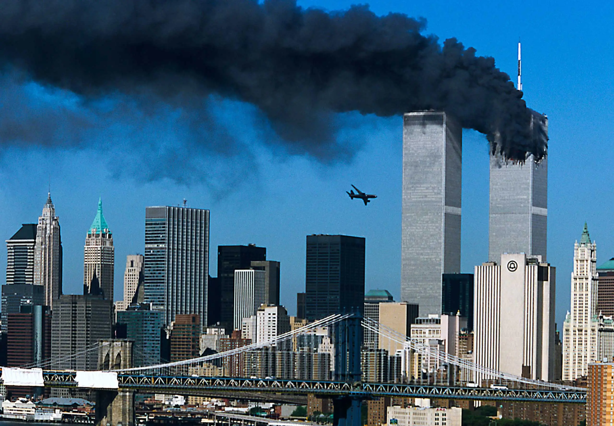
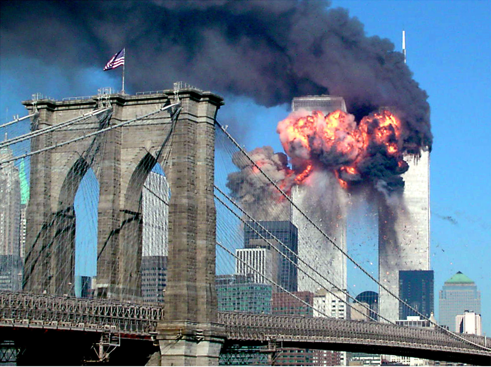

The 9/11 Attacks.


On September 11th, 2001, in New York, shortly after take off, American Airlines Flight 11, a Boeing 767, got hijacked. At approximately 08:46am, Flight 11 would barrel and hit the 93rd - 99th floors of the North tower.
Just out of view of the audience below the towers, staring up at Flight 11, United Flight 175, another B767, would tragically take the lives of unsuspecting victims on the 77th to the 85th floors at 09:03am.
Both flights were scheduled from Boston airport to Los Angeles Airport (LAX), however, never made it to their final destination.
The devastation spread across the nation. Approximately 2,753 lives were taken, leaving families with no explanation and no help. Both 110 story towers fell, tragically killing more on its way down.
Pentagon.
The Twin Towers weren't the only targets during the attacks.
At approximately 09:37am, the West side of the Pentagon was hit by Flight 77, which had been stormed and taken. This tragic crash would end the lives of 189 unlucky souls, who relayed information to their loved ones without the knowledge of the assailants.
The crash of Flight 93.
Flight 93, a Boeing 757-200, scheduled from Newark Liberty International Airport to San Francisco International Airport, took off at 08:42am, and just 44 minutes into the flight, hijackers attempted and failed to take over the plane. The passengers of Flight 93, who had learned about the Twin Towers attack not long before, had realised that it was likely their plane would be hijacked as part of the attacks. Instead of allowing the hijackers to continue in their objective, the passengers of Flight 93 risked, and lost their lives fighting the hijackers. The plane crashed at approximately 10:03am in a field in Stonycreek Township, near the town of Shanksville.
Rest In Peace all lives lost on September 11th, 2001, 2,977 victims.
© 2026 Aryn3G. All rights reserved. This is only for educational purposes and may be inaccurate.